Nesta seção usaremos a aproximação numérica da derivada para resolver
problemas de valor de contorno da forma
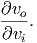
Resolver numericamente o problema acima exige uma discretização do domínio
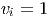, ou seja, dividir o domínio em 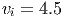 partes iguais, definindo
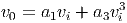
O
conjunto de abcissas 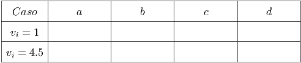, 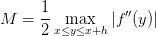 formam uma malha para o problema
discreto. Nosso objetivo é encontrar as ordenadas 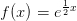 que satisfazem a
versão discreta:
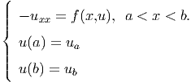
O
vetor solução 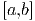 do problema é solução do sistema acima, que é linear se
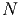 for linear em 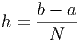 e não linear caso contrário.
Exemplo 7.2.1.Encontre uma solução numérica para o problema de
contorno: